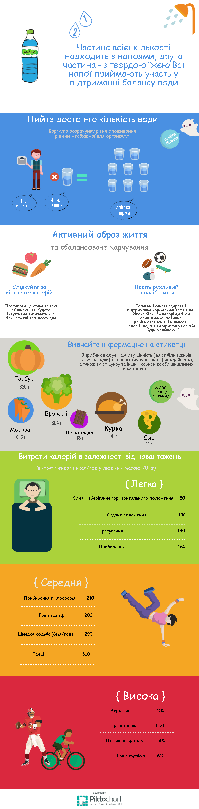

Чи знаєш ти, що в Україні спостерігаються негативні зміни в стані здоров'я населення, особливо у дітей?!
Здоровий спосіб життя
Правило 1
Однією з умов здорового способу життя є харчування. "Їжа повинна бути нашими ліками, а не ліки їжею".
Правило 2
Активність, активність і ще раз активність! Рухаємося назустріч міцному здоров'ю і довголіттю!
Правило 3
Основа здорового способу життя - правильний розпорядок дня і здоровий сон.
Правило 4
Вода-невід'ємна частина життя людини. Головна функція води - очищення організму від шлаків та токсинів.
